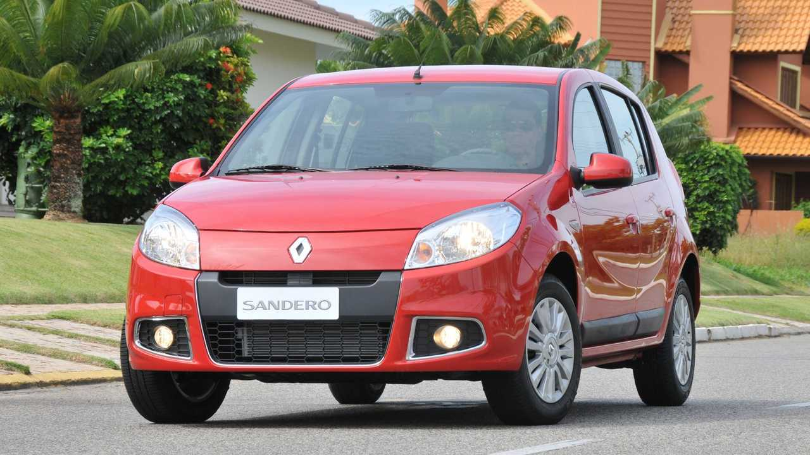
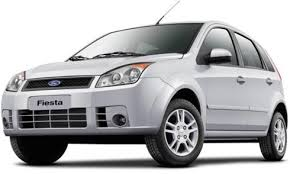

Renault Sandero Expression 1.6 2013/14
- Preços: R$ 33 mil a R$ 39 mil
- Motor: 1.6 8V
- Potência: 106/98 cv
- Torque: 15,5/14,5 kgfm a 2.850 rpm
Modelo compacto que sempre ofereceu espaço interno maior que seus rivais, o Sandero é uma dica para quem busca carros populares não tão apertados. O hatch da marca francesa leva bem dois adultos e uma criança no banco traseiro e ainda oferece um bom porta-malas, com 320 litros.
O motor 1.6 também agrada ao rodar na cidade e não faz feio na estrada ou em retomadas. Especialmente pela boa força em baixos giros. Os aspectos negativos no Sandero ficam na posição de dirigir e no acabamento de qualidade ruim. Vazamentos de óleo e problemas no freio e na transmissão são relatos comuns de donos do modelo.
Os equipamentos são poucos: ar-condicionado, direção eletro-hidráulica, freios ABS, airbag duplo e ajuste de altura do volante. Vidros e travas elétricos eram opcionais.

Chevrolet Onix LT 1.4 2014
- Preços: R$ 36 mil a R$ 40 mil
- Motor: 1.4 8V
- Potência: 106/98 cv
- Torque: 13,9/13,0 kgfm a 4.800 rpm
Carro que vende bem como 0 km costuma se dar bem quando em segunda mão. Isso porque é valorizado no segmento de seminovos, justamente pela mecânica mais conhecida e facilidade em encontrar peças. Além disso, o Onix é aquele carro bastante eficiente para se ter no dia-a-dia urbano.
O motor 1.4 entrega disposição na medida. Mas o velho Família I entrega também certa aspereza e não chega a ser dos mais econômicos. Na parte de recheio, airbags frontais, ABS, ar, direção hidráulica, vidros dianteiros e travas elétricos e som com USB.
Bom lembrar que o Onix não era vendido com filtro de ar-condicionado. E observe se o pedal do freio está com pressão adequada e se a direção apresenta estalos ou ruídos estranhos nas manobras.
.jpg)
Nissan March SV 1.6 2012/13
- Preços: R$ 32 mil a R$ 36 mil
- Motor: 1.6 16V
- Potência: 111 cv
- Torque: 15,1 kgfm a 4.000 rpm
Ainda da leva importada do México, o March chama a atenção pelo bom aproveitamento do espaço interno, especialmente no banco traseiro, e pelo motor quatro-cilindros 1.6 que trabalha bem em médias e altas rotações. Uma das características do Nissan desde sua estreia é o baixo custo de manutenção, apontado como um dos menores do segmento de compactos.
Outra vantagem desta versão SV do hatch está na lista de equipamentos, com airbags frontais, trio elétrico (com acionamento de todos os vidros), ar, direção hidráulica, som e rodas de liga-leve. De ruim, acabamento simples e o banco dianteiro, estreito e que não acomoda bem o corpo. Fique ligado a barulhos na suspensão e no pedal da embreagem.

Volkswagen Gol 1.0 2015
- Preços: R$ 35 mil a R$ 38 mil
- Motor: 1.0 8V
- Potência: 76/72 cv
- Torque: 10,6/9,7 kgfm a 3.850 rpm
O Gol velho de guerra é uma opção de modelo mais novo entre os carros populares usados. Da fornada G6, oferece a robustez de sempre, com acerto mais firme da suspensão e direção, pedais e transmissão mais justos e a manutenção com fama de simples.
Nos itens de série, carrega os (já obrigatórios em 2015) airbag duplo e ABS. No mais, o trivial e uma relação bem racional de equipamentos: ar, vidros dianteiros e travas elétricos, direção hidráulica e só.
O melhor do Gol está justamente no conjunto mecânico. O motor não é nenhum arroubo de desempenho, mas tem bom torque em baixos giros e é ligeiramente mais esperto que a maioria dos conjuntos “mil cilindradadas”. O câmbio bem escalonado e as relações iniciais curtas favorecem.

Fiat Uno Way 1.4 2011/12
- Preços: R$ 30 mil a R$ 36 mil
- Motor: 1.4 8V
- Potência: 88/85 cv
- Torque: 12,5/12,4 kgfm a 3.500 rpm
O melhor do Gol está justamente no conjunto mecânico. O motor não é nenhum arroubo de desempenho, mas tem bom torque em baixos giros e é ligeiramente mais esperto que a maioria dos conjuntos “mil cilindradadas”. O câmbio bem escalonado e as relações iniciais curtas favorecem.
O espaço é mais do mesmo, mas é comum motoristas e caronas mais corpulentos roçarem os ombros. O motor 1.4 tem desempenho apenas modesto e o consumo não é lá essas coisas. Atenção dificuldades em dar partida e oscilações em marcha lenta.
Ford Fiesta Rocam 1.6 2012/13
- Preços: R$ 31 mil a R$ 34 mil
- Motor: 1.6 8V
- Potência: 107/101 cv
- Torque: 15,3/14,5 kgfm a 4.250 rpm
A terceira geração do hatch compacto, ainda da fase Projeto Amazon, é um carro bastante robusto e competente. Ele ficou como opção de entrada na gama Ford no Brasil no início dos anos 2010 após a chegada do New Fiesta do México.
Por isso, tem apenas equipamentos padrão: ar-condicionado, vidros elétricos na frente, travas elétricas e alarme. A assistência na direção era opcional, assim como airbags frontais e freios com ABS.
O destaque vai para o motor 1.6 da linha Rocam, voluntarioso e com arrancadas bem dispostas, mas que tem relatos de superaquecimento. Vale ainda pela posição de dirigir e pelo bom porta-malas, mas fique atento a trepidações no freio e à parte elétrica.
